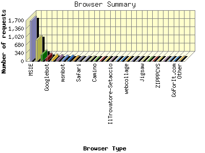
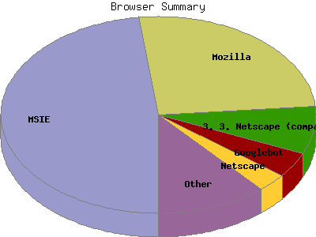

Report generated by Analog 5.91beta1 and Report Magic 2.21
|
Web Server Statistics for "Harish Narayanan (hnarayan) - May 2004" Report generated by Analog 5.91beta1 and Report Magic 2.21 |
The Browser Summary identifies the most popular web browsers used to visit
this site.
Browsers are broken down by recognized categories such as
Netscape Navigator/Communicator, Microsoft Internet Explorer, WebTV, Opera
and the like. Within each category is also a subgroup by version number
such as 'MSIE 5.0' or 'Netscape 4.5'.
This report shows all results. This report is sorted by number of requests.


| Browser Type | Number of requests | Number of bytes transferred | Percentage of the bytes | Percentage of the requests | |
|---|---|---|---|---|---|
| 1. | MSIE | 1,669 | 40.524 MB | 49.34% | 48.07% |
| MSIE/6 | 1,453 | 36.277 MB | 44.17% | 41.85% | |
| MSIE/5 | 216 | 4.248 MB | 5.17% | 6.22% | |
| 2. | Mozilla | 887 | 10.356 MB | 12.61% | 25.55% |
| Mozilla/1 | 886 | 10.354 MB | 12.61% | 25.52% | |
| 3. | Netscape (compatible) | 273 | 4.937 MB | 6.01% | 7.86% |
| 4. | Googlebot | 142 | 6.621 MB | 8.06% | 4.09% |
| Googlebot/2 | 142 | 6.621 MB | 8.06% | 4.09% | |
| 5. | Netscape | 110 | 2.229 MB | 2.71% | 3.17% |
| Netscape/7 | 98 | 1.863 MB | 2.27% | 2.82% | |
| Netscape/4 | 12 | 373.987 KB | 0.45% | 0.35% | |
| 6. | Opera | 76 | 1.526 MB | 1.86% | 2.19% |
| Opera/7 | 76 | 1.526 MB | 1.86% | 2.19% | |
| 7. | msnbot | 72 | 2.114 MB | 2.57% | 2.07% |
| msnbot/0 | 72 | 2.114 MB | 2.57% | 2.07% | |
| 8. | Galeon | 65 | 5.173 MB | 6.30% | 1.87% |
| Galeon/1 | 65 | 5.173 MB | 6.30% | 1.87% | |
| 9. | Yahoo-VerticalCrawler-FormerWebCrawler | 40 | 4.548 MB | 5.54% | 1.15% |
| Yahoo-VerticalCrawler-FormerWebCrawler/3 | 40 | 4.548 MB | 5.54% | 1.15% | |
| 10. | Safari | 27 | 1.026 MB | 1.25% | 0.78% |
| Safari/125 | 27 | 1.026 MB | 1.25% | 0.78% | |
| 11. | ia_archiver | 19 | 2.254 MB | 2.74% | 0.55% |
| 12. | MultiText | 18 | 41.378 KB | 0.05% | 0.52% |
| MultiText/0 | 18 | 41.378 KB | 0.05% | 0.52% | |
| 13. | Camino | 9 | 47.316 KB | 0.06% | 0.26% |
| Camino/0 | 9 | 47.316 KB | 0.06% | 0.26% | |
| 14. | W3C_Validator | 8 | 43.396 KB | 0.05% | 0.23% |
| W3C_Validator/1 | 8 | 43.396 KB | 0.05% | 0.23% | |
| 15. | http: | 8 | 69.692 KB | 0.08% | 0.23% |
| http://www | 8 | 69.692 KB | 0.08% | 0.23% | |
| 16. | IlTrovatore-Setaccio | 6 | 15.205 KB | 0.02% | 0.17% |
| IlTrovatore-Setaccio/1 | 6 | 15.205 KB | 0.02% | 0.17% | |
| 17. | W3C-checklink | 5 | 0.000 B | 0.00% | 0.14% |
| W3C-checklink/3 | 5 | 0.000 B | 0.00% | 0.14% | |
| 18. | WEP Search 00 | 4 | 27.441 KB | 0.03% | 0.12% |
| 19. | webcollage | 4 | 368.039 KB | 0.44% | 0.12% |
| webcollage/1 | 4 | 368.039 KB | 0.44% | 0.12% | |
| 20. | Python-urllib | 3 | 35.736 KB | 0.04% | 0.09% |
| Python-urllib/2 | 3 | 35.736 KB | 0.04% | 0.09% | |
| 21. | Missigua Locator 1.9 | 2 | 13.721 KB | 0.02% | 0.06% |
| 22. | Jigsaw | 2 | 4.084 KB | 0.01% | 0.06% |
| 23. | NutchCVS | 2 | 5.068 KB | 0.01% | 0.06% |
| NutchCVS/0 | 1 | 2.534 KB | 0.00% | 0.03% | |
| 24. | IE | 2 | 5.068 KB | 0.01% | 0.06% |
| IE/5 | 2 | 5.068 KB | 0.01% | 0.06% | |
| 25. | ZIPPPCVS | 2 | 5.068 KB | 0.01% | 0.06% |
| ZIPPPCVS/0 | 2 | 5.068 KB | 0.01% | 0.06% | |
| 26. | DoctorHTML | 1 | 4.484 KB | 0.01% | 0.03% |
| DoctorHTML/6 | 1 | 4.484 KB | 0.01% | 0.03% | |
| 27. | Java | 1 | 15.845 KB | 0.02% | 0.03% |
| 28. | GoForIt.com | 1 | 2.522 KB | 0.00% | 0.03% |
| 29. | kuloko-bot | 1 | 2.522 KB | 0.00% | 0.03% |
| kuloko-bot/0 | 1 | 2.522 KB | 0.00% | 0.03% | |
| 30. | Program Shareware 1.0.1 | 1 | 6.860 KB | 0.01% | 0.03% |
| 31. | FAST-WebCrawler | 1 | 2.522 KB | 0.00% | 0.03% |
| FAST-WebCrawler/3 | 1 | 2.522 KB | 0.00% | 0.03% | |
| 32. | v1.6 | 1 | 83.787 KB | 0.10% | 0.03% |
| 33. | Wells Search II | 1 | 6.860 KB | 0.01% | 0.03% |
| 34. | gnome-vfs | 1 | 242.000 B | 0.00% | 0.03% |
| gnome-vfs/2 | 1 | 242.000 B | 0.00% | 0.03% | |
| 35. | Lincoln State Web Browser | 1 | 6.860 KB | 0.01% | 0.03% |
| 36. | Brick House Browse 6.2 | 1 | 6.841 KB | 0.01% | 0.03% |
| 37. | trexmod | 1 | 2.522 KB | 0.00% | 0.03% |
| 38. | Baiduspider+(+http: | 1 | 2.534 KB | 0.00% | 0.03% |
| Baiduspider+(+http://www | 1 | 2.534 KB | 0.00% | 0.03% | |
| 39. | Dumbot(version 0.1 beta - dumbfind.com) | 1 | 4.484 KB | 0.01% | 0.03% |
| 40. | larbin_2.6.3_for_(http: | 1 | 2.522 KB | 0.00% | 0.03% |
| larbin_2.6.3_for_(http://cosco | 1 | 2.522 KB | 0.00% | 0.03% | |
| 41. | mozDex | 1 | 2.534 KB | 0.00% | 0.03% |
| mozDex/0 | 1 | 2.534 KB | 0.00% | 0.03% | |
| 42. | Pompos | 1 | 2.522 KB | 0.00% | 0.03% |
| Pompos/1 | 1 | 2.522 KB | 0.00% | 0.03% | |
This report was generated on August 5, 2004 15:50.
Report time frame May 1, 2004 00:57 to May 31, 2004 23:07.
| Web statistics report produced by: | |
 Analog 5.91beta1 Analog 5.91beta1 |  Report Magic 2.21 Report Magic 2.21 |